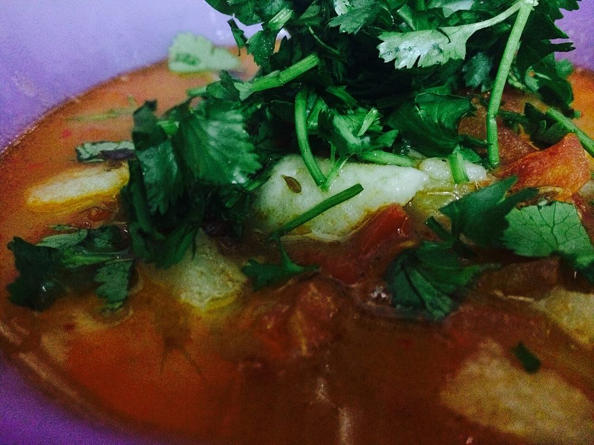

Seyal Bhaji
potato and cauliflower smothered in a wet green coriander masala, quick and everyday

Allergens: none of the ten listed below
Checked against the ingredient list for ten allergens: milk, egg, fish, crustaceans, tree nuts, peanuts, sesame, mustard, soy and gluten. Brands vary, so read the label on anything new to you.
Ingredients
Quantities for 4.
- 3 medium, cubed Potato
- 300g, in florets Cauliflower
- 1/2 cup Peasoptional
- 2 large bunches (about 100g), chopped with the tender stalks Coriander Leavesseyal means smothered in green. This is not a garnish quantity
- 2 medium, finely chopped Onion
- 2, chopped Tomato
- 6 cloves, crushed Garlic
- 2cm piece, grated Ginger
- 3, chopped Green Chilli
- 1/2 tsp Turmeric
- 1 tsp Coriander Powder
- 3/4 tsp Chilli Powder
- 1 tsp Cumin Seeds
- 1/2, juiced Lemonoptional
- 4 tbsp Neutral Oil
- 1/2 cup Water
- to taste Salt
Cookware
stovetop, kadhai
Before you start
- Wash and chop the coriander, stalks included, and keep it ready. It goes in as a bulk vegetable, not a finish.
- Cut the cauliflower florets and potato cubes to the same size so they finish together.
- Soak the cut potato in cold water while you chop the rest, then drain and pat dry.
Method
- Heat the oil in a kadhai and crackle the cumin seeds for 20 seconds.
- Add the onion and fry 6-7 minutes, until soft and just turning gold at the edges.
- Add the garlic, ginger and green chilli and fry 1 minute until fragrant.
- Stir in the tomato, turmeric, coriander powder, chilli powder and salt and cook 5 minutes until pulpy and oil-flecked.
- Tip in the chopped coriander and cook 3-4 minutes, stirring, until it wilts right down and the masala turns dark green.Let the coriander actually cook into the masala. Thrown in at the end it tastes soapy and raw.
- Add the potato, cauliflower and peas and turn them through until every piece is coated green.
- Add the water, cover and cook on low 15 minutes, shaking the pan occasionally, until the potato gives to a knife.Half a cup of water is enough. The vegetables release their own and seyal bhaji should cling, not swim.
- Uncover, raise the heat and cook 3 minutes more to dry off any loose liquid.
- Squeeze over the lemon, check the salt and serve with phulka or plain rice.
Storage
Keeps 2 days refrigerated, though the green dulls by day two. Reheat in a pan with a tablespoon of water over medium heat.
Nutrition Good estimate
Low protein: 7 g a serving, 10% of the calories
| Per serving387 g | Per 100 g | |
|---|---|---|
| Calories | 307 kcal | 80 kcal |
| Protein | 7.4 g | 2 g |
| Carbohydrate | 40.2 g | 10 g |
| of which sugars | 8.0 g | 2 g |
| Fibre | 8.2 g | 2 g |
| Fat | 14.8 g | 4 g |
| of which saturated | 1.6 g | 0 g |
| of which unsaturated | 12.2 g | 3 g |
Ingredients given to taste count as zero, so the real figures run a little higher. Estimated from raw ingredients using USDA FoodData Central.
Times, yields, allergens and nutrition are guidance. Use your own judgement on doneness and on storing. More in About.